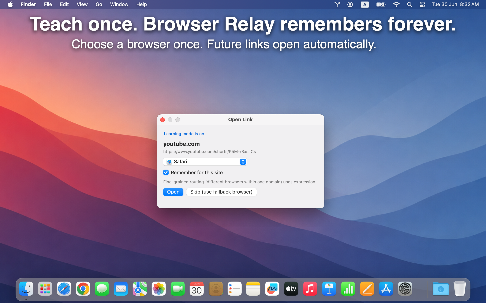

Teach once. Remember forever.
Learning Mode asks which browser to use when you open a link from a new site. Check Remember for this site — Browser Relay handles every future link from that domain.
Need finer control? Route different pages on the same site to different browsers with expression rules on the Rules tab.
